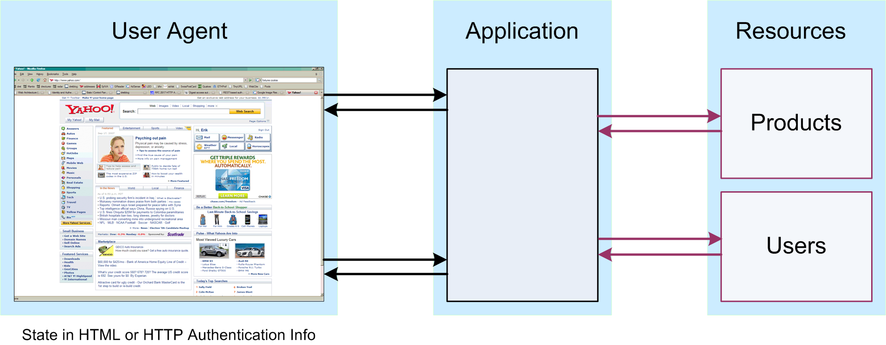
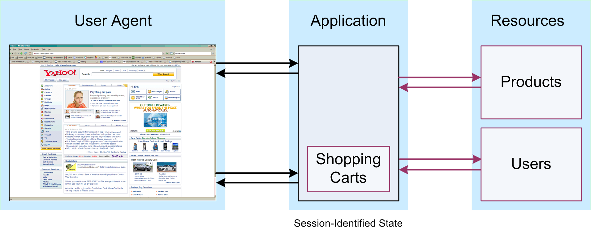
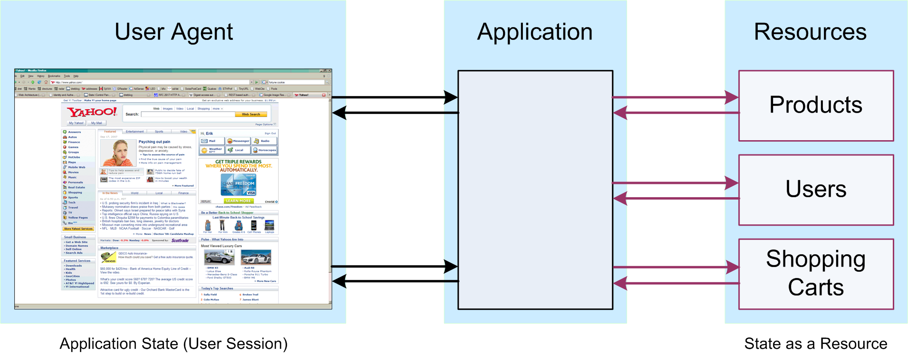
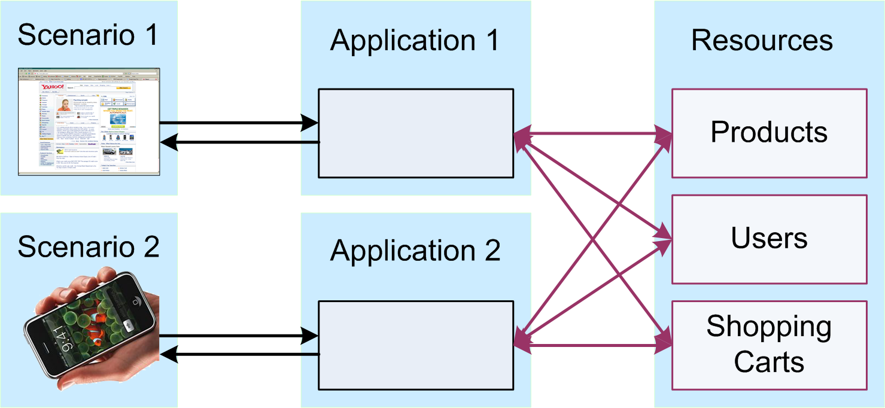

(2) Abstract
HTTP is a stateless protocol, where each request/response interaction is a separate interaction and there is no protocol support for longer sessions (such as a user logging in and working on a Web site as an identified user). State management refers to mechanisms which provide support for this kind of scenario, the most popular choice for state management are cookies. Another possibility is URI-based state management. The newest option for storing state is HTML5 Web Storage. This lecture is also a glimpse into the world of Representational State Transfer (REST), the Web's fundamental model of handling interaction with resources.
Session
(4) HTTP and Sessions
- A session is an ongoing exchange of information, where later parts of the exchange depend on earlier parts
- for example: buying an airline ticket from a travel web site
- The current status of a session is referred to as its state
- for example: user has selected a specific flight for the outgoing leg of a round-trip flight, but has not yet selected a flight for the return leg
- HTTP has no session concept
- interactions are HTTP individual request/response pairs and not "site visits"
- HTTP/1.1
[Web Foundations (URIs & HTTP); HTTP Performance (1)] does not change this, it is only a performance optimization
- servers can not reliably identify users interacting with a Web site
- Sessions have to be handled at the level of Web applications built on top of HTTP
(5) Keeping Track of Session State
- Information about the current state of a session has to be stored someplace
- With server-side sessions, the state is stored by the web server
- OK when there is just one web server, but most large web sites have many servers
- either these servers have to share all the same state information, or a user has to keep connecting to the same server throughout the session
- both of these are problematic
- With client-side sessions, the state is stored by the client (web browser)
- the browser has all relevant information about a session
- when the server restarts, no information will be lost
(6) Keeping Track of Session State
- Three basic approaches are possible
- sending back and forth state as part of every request and response
- store state in the server and refer to it from the client
- treat state as a resource: store state at a URI and use the URI to refer to that state
(7) State in HTML or HTTP

(8) State in the Server Application

(9) State as a Resource

(10) Stateless Shopping
- Typical
session scenarios
can be
[http://www.peej.co.uk/articles/no-sessions.html]- Client: Show me your products
- Server: Here's a list of all the products
- Client: I'd like to buy 1 of http://ex.org/product/X, I am "John"/"Password"
- Server: I've added 1 of http://ex.org/product/X to http://ex.org/users/john/basket
- Client: I'd like to buy 1 of http://ex.org/product/Y, I am "John"/"Password"
- Server: I've added 1 of http://ex.org/product/Y to http://ex.org/users/john/basket
- Client: I don't want http://ex.org/product/X, remove it, I am "John"/"Password"
- Server: I've removed http://ex.org/product/X to http://ex.org/users/john/basket
- Client: Okay I'm done, username/password is "John"/"Password"
- Server: Here is the total cost of the items in http://ex.org/users/john/basket
- This is more than just renaming
session
to resource
- all relevant data is stored persistently on the server
- the shopping cart's URI can be used by other services for working with its contents
- instead of hiding the cart in the session, it is exposed as a resource
(11) Reusing Resources
